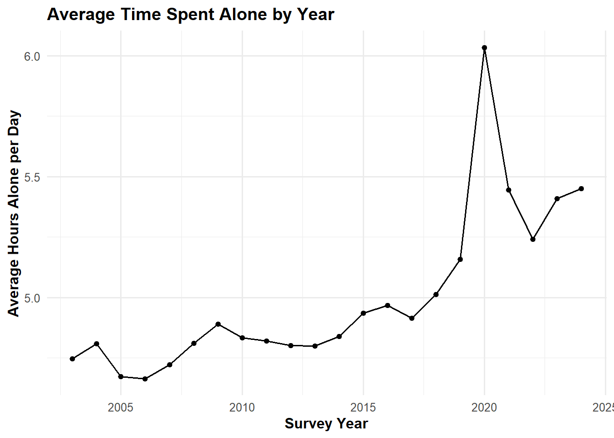
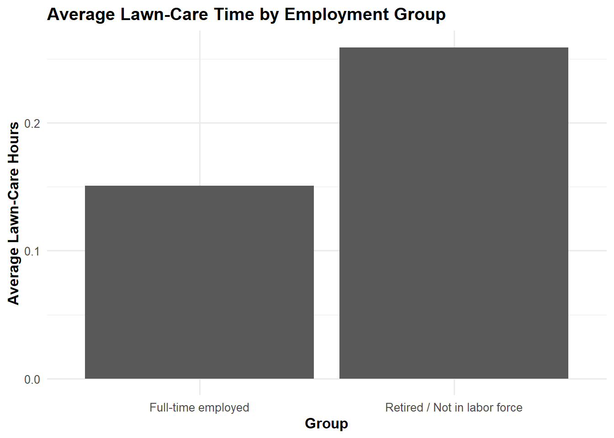
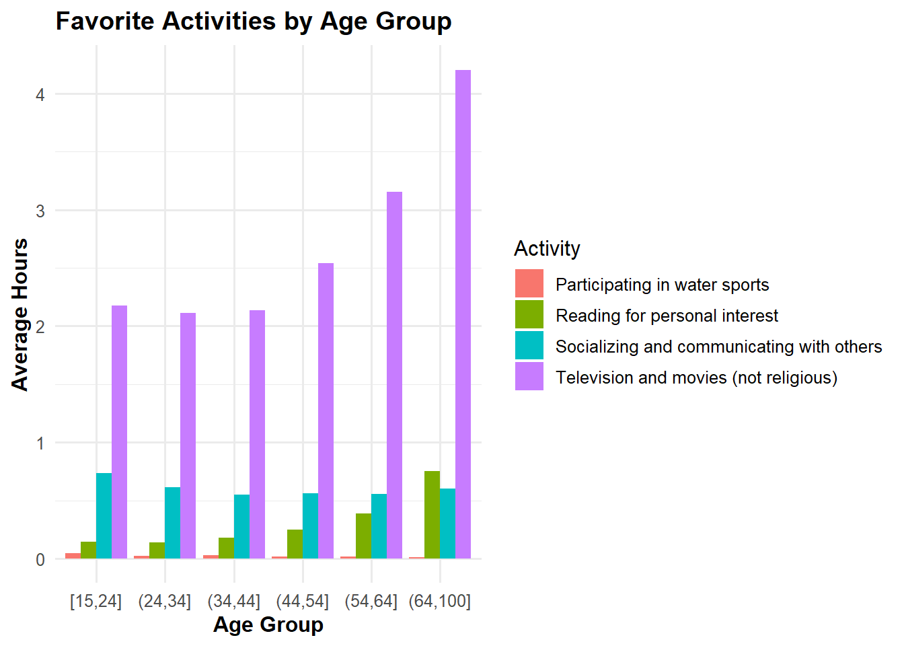

| Total Time Spent on Sleeping Activities | |
| Total Minutes | Total Hours |
|---|---|
| 134,479,929 | 2,241,332.15 |
MP02 – American Time Use Survey
Introduction
Time-use data provides insight into daily behavior, productivity, and well-being. This project uses the American Time Use Survey (ATUS), produced by the U.S. Bureau of Labor Statistics and the U.S. Census Bureau, to study how Americans spend their time. Rather than relying on summary tables, this analysis uses ATUS microdata from 2003 through 2024, which allows for person-level and activity-level analysis across more than two decades.
The goal of this project is to examine how Americans allocate time across daily activities and to explore what the data suggests about unpaid labor and broader time-use patterns. This analysis focuses on identifying patterns in time use across demographics, including employment status, marital status, and age.
Analysis
This section prepares and structures the ATUS data for analysis by loading, cleaning, and transforming the respondent, roster, and activity datasets. The goal is to create a unified dataset that supports both descriptive and comparative analysis across individuals and activities.
Task 2 Results
Sleeping Hours
Female Participants (2003, No Time Alone)
| Female Participants in 2003 with No Time Alone |
| n_female_participants |
|---|
| 2,754 |
Explanation
For the sleeping analysis, the activity dataset was joined to the activity lookup table using the level-3 activity code so that each activity could be labeled. Sleeping activities were filtered and total time was summed and converted from minutes to hours.
For the demographic analysis, the respondent dataset was joined to the roster dataset using participant ID. The data was filtered for females in 2003 with zero time alone, and a total of 2,754 such respondents were identified.
Task 3
For Task 3, I modified the ATUS import function to include additional demographic and contextual variables needed for later analysis. Specifically, I added the number of children under age 18 living in the household, a proxy for marital status based on spouse presence in the household, respondent employment status, activity location, and an indicator for whether the respondent is enrolled in college or university.
| Preview of Respondent Data | |||||||||
| participant_id | survey_year | survey_weight | time_alone | n_children_home | married | employment_status | enrolled_college | weekly_earnings | full_time_status |
|---|---|---|---|---|---|---|---|---|---|
| 20,030,100,013,280 | 2,003 | 8,155,463 | 525 | 0 | Yes | Employed - absent | NA | 66,000 | Part time |
| 20,030,100,013,344 | 2,003 | 1,735,323 | 0 | 2 | Yes | Employed - at work | No | 20,000 | Part time |
| 20,030,100,013,352 | 2,003 | 3,830,527 | 475 | 0 | Yes | Employed - absent | No | 20,000 | Part time |
| 20,030,100,013,848 | 2,003 | 6,622,023 | 350 | 2 | Yes | Unemployed - looking | No | −1 | NA |
| 20,030,100,014,165 | 2,003 | 3,068,387 | 140 | 2 | Yes | Employed - at work | NA | −1 | Full time |
| 20,030,100,014,169 | 2,003 | 3,455,425 | 170 | 1 | No | Employed - absent | Yes | 57,600 | Full time |
| 20,030,100,014,209 | 2,003 | 1,637,826 | 132 | 1 | Yes | Employed - at work | No | −1 | Full time |
| 20,030,100,014,427 | 2,003 | 6,574,427 | 105 | 1 | No | Employed - at work | No | 33,250 | Full time |
| 20,030,100,014,550 | 2,003 | 1,528,296 | 0 | 3 | Yes | Employed - at work | No | 63,000 | Full time |
| 20,030,100,014,758 | 2,003 | 4,277,053 | 626 | 4 | Yes | Employed - at work | No | 45,000 | Full time |
| Sample of Key Demographic Variables | ||||||
| participant_id | n_children_home | married | employment_status | enrolled_college | weekly_earnings | full_time_status |
|---|---|---|---|---|---|---|
| 20,030,100,013,280 | 0 | Yes | Employed - absent | NA | 66,000 | Part time |
| 20,030,100,013,344 | 2 | Yes | Employed - at work | No | 20,000 | Part time |
| 20,030,100,013,352 | 0 | Yes | Employed - absent | No | 20,000 | Part time |
| 20,030,100,013,848 | 2 | Yes | Unemployed - looking | No | −1 | NA |
| 20,030,100,014,165 | 2 | Yes | Employed - at work | NA | −1 | Full time |
| 20,030,100,014,169 | 1 | No | Employed - absent | Yes | 57,600 | Full time |
| 20,030,100,014,209 | 1 | Yes | Employed - at work | No | −1 | Full time |
| 20,030,100,014,427 | 1 | No | Employed - at work | No | 33,250 | Full time |
| 20,030,100,014,550 | 3 | Yes | Employed - at work | No | 63,000 | Full time |
| 20,030,100,014,758 | 4 | Yes | Employed - at work | No | 45,000 | Full time |
| Distribution of Activity Locations | |
| Activity Location | Count |
|---|---|
| Respondent's home or yard | 2,095,267 |
| NA | 907,638 |
| Car/truck/motorcycle (driver) | 672,364 |
| Respondent's workplace | 231,498 |
| Someone else's home | 161,397 |
| Car/truck/motorcycle (passenger) | 153,114 |
| Other place | 146,333 |
| Other store/mall | 97,664 |
| Restaurant or bar | 92,900 |
| Walking | 65,016 |
| Outdoors away from home | 62,606 |
| School | 45,609 |
| Place of worship | 44,515 |
| Grocery store | 43,714 |
| Unspecified place | 13,916 |
| Gym/health club | 11,256 |
| Bus | 10,416 |
| Subway/train | 5,431 |
| Bank | 4,466 |
| Bicycle | 3,288 |
| Post Office | 3,088 |
| Library | 2,788 |
| Other mode of transportation | 1,789 |
| Taxi/limousine service | 1,688 |
| Airplane | 1,577 |
| Boat/ferry | 674 |
| Unspecified transportation | 9 |
Task 4
Task 4 uses weighted summaries to answer the initial exploratory questions. Because ATUS is a survey, weighted estimates are more appropriate than raw averages when describing typical behavior in the U.S. population.
Task 4.1: Average time spent alone per day
| Average Time Spent Alone per Day | |
| avg_time_alone_min | avg_time_alone_hours |
|---|---|
| 297.71 | 4.96 |
The weighted average American spends about 4.96 hours alone per day. Along with the year-by-year results below, this suggests that solitary time is not unusual or marginal, but a regular part of daily life in the U.S.
Task 4.2: Average time spent alone by year
| Average Time Spent Alone by Year | ||
| Survey Year | Average Minutes Alone | Average Hours Alone |
|---|---|---|
| 2,003 | 284.80 | 4.75 |
| 2,004 | 288.59 | 4.81 |
| 2,005 | 280.36 | 4.67 |
| 2,006 | 279.84 | 4.66 |
| 2,007 | 283.35 | 4.72 |
| 2,008 | 288.66 | 4.81 |
| 2,009 | 293.39 | 4.89 |
| 2,010 | 289.99 | 4.83 |
| 2,011 | 289.21 | 4.82 |
| 2,012 | 288.05 | 4.80 |
| 2,013 | 288.01 | 4.80 |
| 2,014 | 290.32 | 4.84 |
| 2,015 | 296.10 | 4.94 |
| 2,016 | 298.11 | 4.97 |
| 2,017 | 294.88 | 4.91 |
| 2,018 | 300.83 | 5.01 |
| 2,019 | 309.45 | 5.16 |
| 2,020 | 362.06 | 6.03 |
| 2,021 | 326.73 | 5.45 |
| 2,022 | 314.45 | 5.24 |
| 2,023 | 324.52 | 5.41 |
| 2,024 | 327.08 | 5.45 |

Time spent alone rises from about 4.75 hours in 2003 to 6.03 hours in 2020 before declining and stabilizing around 5.24 to 5.45 hours from 2022 through 2024. This pattern suggests that broader social disruptions likely affected how much time Americans spent by themselves.
Task 4.3: Approximately what percent of Americans are retired?
| Approximate Percent of Americans Not in the Labor Force |
| Percent Not in Labor Force |
|---|
| 32.18 |
Approximately 32.18% of Americans are classified here as not in the labor force, which is used in this analysis as a rough proxy for retirement. Taken together with the later comparisons in Task 5, this suggests that employment status is an important factor in how daily time is allocated.
Task 4.4: Average hours Americans sleep per night
| Average Hours Americans Sleep per Night |
| Average Sleep Hours |
|---|
| 8.77 |
Americans average about 8.77 hours of sleep per night. This falls within a plausible range and reinforces the idea that sleep remains one of the largest and most stable components of daily time use.
Task 4.5: Average hours spent on childcare among Americans with one or more children in the home
| Average Hours Spent on Childcare |
| Average Childcare Hours |
|---|
| 1.01 |
Among Americans with at least one child in the home, the average time spent on childcare-related activities is 1.01 hours per day. Compared with the broader results on sleep, leisure, and time alone, this highlights how caregiving responsibilities shape daily routines in distinct ways.
Task 5
Task 5 answers the table-based exploratory questions using short gt tables.
Task 5.1: Do retired persons spend more time on lawn-care than people who have full-time employment?
| Average Lawn-Care Time | ||
| Retired / not in labor force vs. full-time employed respondents | ||
| Group | Average Lawn-Care Hours | Respondents |
|---|---|---|
| Full-time employed | 0.15 | 122,728 |
| Retired / Not in labor force | 0.26 | 86,841 |

The table suggests that both groups spend relatively little time on lawn-care on an average day, though retired or not-in-labor-force respondents spend somewhat more than full-time employed respondents. Because this is averaged across all respondents in each group, even people who did no lawn-care that day are included in the estimate.
Task 5.3: Where do high-earning Americans spend the majority of their time?
| Where High-Earning Americans Spend Their Time | ||
| High earners defined here as the top quartile of weekly earnings | ||
| Location | Weighted Hours | Share of Time (%) |
|---|---|---|
| Respondent's home or yard | 1,746,917,433,864.74 | 43.59 |
| Respondent's workplace | 1,271,725,261,633.18 | 31.74 |
| Car/truck/motorcycle (driver) | 302,305,708,968.40 | 7.54 |
| Other place | 176,231,615,079.18 | 4.40 |
| Someone else's home | 119,435,609,788.89 | 2.98 |
| Restaurant or bar | 97,541,100,997.46 | 2.43 |
| Outdoors away from home | 66,309,258,094.51 | 1.65 |
| Other store/mall | 53,057,491,669.16 | 1.32 |
| Car/truck/motorcycle (passenger) | 33,266,342,506.64 | 0.83 |
| Place of worship | 24,948,701,978.20 | 0.62 |
High earners are defined here as respondents in the top quartile of weekly earnings to provide a consistent and data-driven threshold. The percentage column is the most interpretable summary here, and it shows that high earners spend the largest shares of their time at home and at work, suggesting that paid labor and recovery dominate much of their daily routine.
Task 5.4: What are the most common activities reported by Americans when on a bus, train, subway, boat, or ferry?
| Most Common Activities on Bus, Train, Subway, Boat, or Ferry | ||
| Activity | Episodes | Total Hours |
|---|---|---|
| Travel related to working | 4,781 | 2,788.80 |
| NA | 3,607 | 2,192.27 |
| Travel related to taking class | 1,516 | 705.45 |
| Travel related to eating and drinking | 1,282 | 833.33 |
| Travel related to socializing and communicating | 1,171 | 690.58 |
| Travel related to grocery shopping | 542 | 244.35 |
| Travel related to using medical services | 402 | 234.28 |
| Travel related to arts and entertainment | 379 | 298.57 |
| Travel related to participating in sports, exercise, or recreation | 374 | 232.02 |
| Other Traveling | 369 | 289.77 |
Transit-related activities are dominated by travel tied to work, school, and essential errands. This suggests that time spent on buses, trains, and ferries is primarily functional rather than recreational, which fits with the broader pattern that travel is often tied to other core daily obligations.
Task 5.5: How much time per day do Americans spend on four favorite activities and how does this vary by age group?
| Average Hours Spent on Four Favorite Activities by Age Group | ||||
| Age Group | Participating in water sports | Reading for personal interest | Socializing and communicating with others | Television and movies (not religious) |
|---|---|---|---|---|
| [15,24] | 0.05 | 0.14 | 0.73 | 2.17 |
| (24,34] | 0.02 | 0.14 | 0.61 | 2.11 |
| (34,44] | 0.03 | 0.18 | 0.55 | 2.14 |
| (44,54] | 0.02 | 0.25 | 0.56 | 2.54 |
| (54,64] | 0.02 | 0.38 | 0.56 | 3.15 |
| (64,100] | 0.01 | 0.75 | 0.60 | 4.20 |

Time spent on favorite activities varies meaningfully across age groups, reflecting changing preferences and daily responsibilities over the life course. In particular, older groups appear to spend more time on reading and television, while younger groups devote relatively more time to socializing, suggesting that age is an important source of variation in discretionary time use.
Conclusion
This analysis highlights how Americans allocate their time across daily activities, with clear differences observed across employment status, marital status, and age groups. Survey-weighted estimates reveal meaningful patterns in time spent alone, sleeping, leisure, and childcare. While results are descriptive, they provide insight into how demographic and lifestyle factors shape daily behavior.
AI Usage Statement
NoteAI Usage Statement
I used AI tools (ChatGPT) for assistance with R coding syntax, debugging, and guidance on implementing functions, formulas, and visualizations. AI was used only to support coding tasks and not for writing or editing any non-code portions of this report.